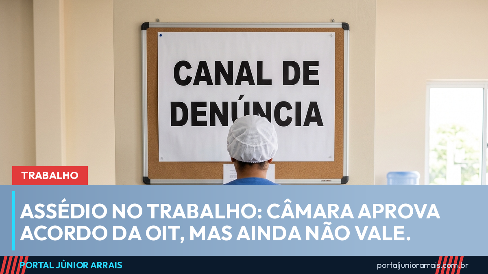

Assédio no trabalho: Câmara aprova Convenção 190 da OIT, mas ela ainda não vale

A Câmara dos Deputados aprovou, em 1º de setembro, a adesão do Brasil à Convenção 190 da Organização Internacional do Trabalho, o primeiro tratado internacional dedicado à eliminação da violência e do assédio no mundo do trabalho. O texto (Projeto de Decreto Legislativo 997/26) teve parecer favorável da deputada Benedita da Silva (PT-RJ) e agora segue para o Senado. Enquanto não passar por lá e não for ratificado, a convenção não vale no Brasil.
O que a convenção define
A Convenção 190 trata como violência e assédio um conjunto de comportamentos, práticas ou ameaças, ocorridos uma vez ou de forma repetida, capazes de causar dano físico, psicológico, sexual ou econômico — inclusive quando têm motivação de gênero. É uma definição ampla: alcança a humilhação em reunião, a piada de cunho sexual, a ameaça de demissão como forma de pressão e a retaliação contra quem denuncia.
Quem ela protege
A proteção não se limita a quem tem carteira assinada. O tratado alcança:
- empregados e trabalhadores autônomos;
- estagiários, aprendizes e voluntários;
- quem foi demitido e quem é candidato a uma vaga;
- chefes e gerentes, que também podem ser vítimas;
- setor público e privado, economia formal e informal, cidade e campo.
Para o público deste portal, o ponto mais importante é o alcance sobre a economia informal e sobre a trabalhadora doméstica, a diarista, a vendedora por aplicativo — gente que hoje tem pouca proteção prática quando sofre assédio de quem paga.
O que o país teria de fazer
Ao ratificar, o Brasil se compromete a manter leis e políticas contra a violência e o assédio, a exigir das empresas medidas de prevenção e canais seguros de denúncia, a proteger quem denuncia contra retaliação e a garantir fiscalização e reparação para as vítimas. No mesmo dia, a Câmara aprovou também a Convenção 156 da OIT, sobre trabalhadores com responsabilidades familiares, que proíbe usar o cuidado com filhos ou parentes como motivo de demissão.
O que já vale hoje
Mesmo sem a convenção, o assédio no trabalho não é terra sem lei. A CLT permite que o empregado rompa o contrato por culpa do patrão, com os mesmos direitos da demissão sem justa causa, quando sofre tratamento com rigor excessivo ou ato lesivo à honra. A Lei 14.457/2022 obriga empresas com CIPA a manter canal de denúncia e regras contra assédio sexual. E o assédio sexual com uso da posição de chefia é crime. O portal já explicou, em matéria sobre o período eleitoral, o que é assédio eleitoral e como ele é punido; e mostrou que o afastamento por saúde mental bateu recorde no INSS — um dos efeitos do ambiente de trabalho doente.
Cuidado com golpe
Tema de direito trabalhista atrai anúncio de quem promete indenização alta e rápida "só com um print". O golpista pede uma taxa adiantada para "abrir o processo", pede senha do aplicativo do governo ou promete ganho de causa sem antes olhar o seu caso. Nenhum órgão público cobra para registrar denúncia de assédio, e ninguém pode prometer resultado antes de conhecer as provas.
Se você está sofrendo assédio no trabalho, guarde mensagens, anote datas e testemunhas, e procure um profissional de sua confiança para avaliar o caso e o melhor caminho.
Conteúdo informativo — não substitui orientação individualizada sobre o seu caso.
Júnior Arrais · Editor do Portal Júnior Arrais
Comunicador de Ubá (MG). Escreve todos os dias sobre benefícios sociais, INSS, trabalho e economia do dia a dia, a partir do Diário Oficial, de portarias e de fontes oficiais, em linguagem simples. Conheça a linha editorial e a política de correções do portal.